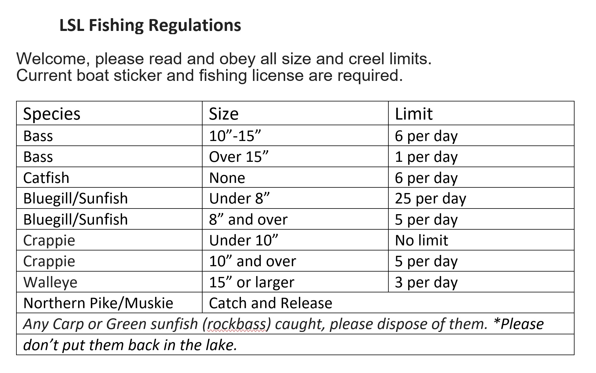

Fishing
FISHING RULES
- ■ All members and guests must be licensed by the Illinois Department of Natural Resources.
- ■ State of Illinois laws must be observed, as enforced by Ill. Dept. of Conservation.
- ■ Fishing shall be limited to pole and line only. All other means are prohibited, except by permit, issued by the Board of Directors.
- ■ No live bait is to be used, with the exception of worms, crayfish, and minnows.
- ■ The daily catch limit generally follows recommendations of the Illinois Department of Natural Resources. See the signs posted at the boat launch and at outlot DD for the current limits.
- ■ Fishing rights are for members and their guests only. Guests must be accompanied by a member at all times.
- ■ Please dispose of dead fish immediately by placing them in containers provided for this purpose on the outlots.
- ■ Absolutely no fish are to be stocked.
- ■ Bullfrogs may be harvested within the season and limits as established by the Illinois Department of Natural Resources.
- ■ Please don’t litter, or trespass on others property.
- ■ A $25.00 fine will be assessed to anyone violating the above fishing rules.
■ Anyone who believes that these fishing privileges are being abused or that trespassing is occurring should notify the patrolman. Members should carry the issued membership cards for identification as a Little Swan Lake Club Member.
Citations will be issued by the patrolman for violations of the fishing rules.
|  |